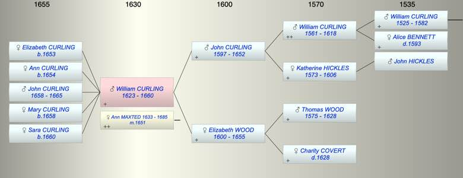

| [Index] |
| William (II) CURLING (1623 - 1660) |
|  |
| b. 1623 at St Laurence |
| m. 27 Feb 1651 Ann MAXTED (1633 - 1685) at St Laurence |
| d. 1660 at St Laurence aged 37 |
| Parents: |
| John (1) CURLING (1597 - 1652) |
| Elizabeth WOOD (1600 - 1655) |
| Siblings (5): |
| Anne CURLING (1625 - ) |
| John CURLING (1627 - ) |
| Jane CURLING (1628 - ) |
| Susanna CURLING (1629 - ) |
| Elizabeth CURLING (1630 - ) |
| Children (5): |
| Elizabeth CURLING (1653 - ) |
| Ann CURLING (1654 - ) |
| John CURLING (1658 - 1665) |
| Mary CURLING (1658 - ) |
| Sara CURLING (1660 - ) |
| Events in William (II) CURLING (1623 - 1660)'s life | |||||
| Date | Age | Event | Place | Notes | Src |
| 1623 | William (II) CURLING was born | St Laurence | Note 1 | ||
| 27 Feb 1651 | 28 | Married Ann MAXTED (aged 18) | St Laurence | Note 2 | |
| 1652 | 29 | Death of father John (1) CURLING (aged 55) | St Laurence | Note 3 | |
| 1653 | 30 | Birth of daughter Elizabeth CURLING | St Laurence | Note 4 | |
| 1654 | 31 | Birth of daughter Ann CURLING | St Laurence | Note 5 | |
| 1655 | 32 | Death of mother Elizabeth WOOD (aged 55) | Note 6 | ||
| 06 Mar 1658 | 35 | Birth of son John CURLING | St Laurence | Note 7 | |
| 28 Aug 1658 | 35 | Birth of daughter Mary CURLING | St Lawrence | Note 8 | |
| 1660 | 37 | Birth of daughter Sara CURLING | St Lawrence | Note 9 | |
| 1660 | 37 | William (II) CURLING died | St Laurence | Note 10 | |
| Personal Notes: |
|
William Curling – Will summary
CCA PRC 17/71/255b PRC 16/268 C/11 made 15 Apr 1660 proved 19 Jun 1662 • William Curling of St Laurence, Isle of Thanet, yeoman • after the death of William’s wife Ann, son John Curlinge to have all William’s rights and tithes in the house and land which William is now occupying, John to pay out of the same to William’s brother John and his heirs the annuity of £10 a year • Also to son John, at the age of 21, £50 • Eldest daughter Elizabeth £50 at marriage or age 21 • Younger daughter Ann £50 at marriage or age 21 • If wife Ann is with child when William dies, the child, whether boy or girl, to have £50 at marriage or age 21. • If any of the children die their legacies to be divided amongst surviving children within one year of the date when the deceased would have reached age 21. • Wife Ann to have all movable goods and chattels, paying thereout any debts or legacies of this will as they become due. • Executrix is to be wife Ann Witnesses John Cooper, Robert Maxted, George Baker |
| Created on a Mac™ using iFamily for Mac™ on 8 Oct 2023 |